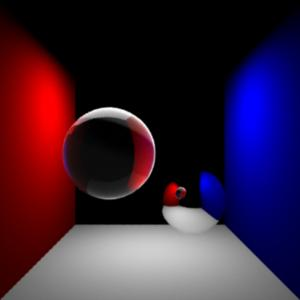
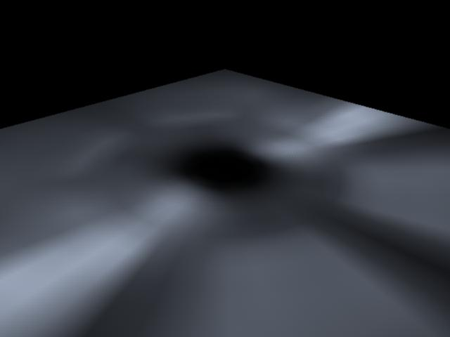

Light Shaders
This section
shows the basic workflow for mental ray light shaders in Maya.
References:
mental ray User Manual, Chapter 1.8, 3.13.
mental ray Shaders Guide, Chapter 1.10, 2.2.
Rendering with mental ray, Chapter 7.8,
Appendix D.
Where to find light shaders
Material shaders appear in the Hypershade > Create mental ray Nodes >
Lights.
The following material shaders are shipped with Maya:
· mib_light_infinite
·
mib_light_photometric
· mib_light_point
· mib_light_spot
· physical_light
Default behavior
The proper connection for a light shader is from lightShader.message
to lightShape.miLightShader.
Ctrl+drag from a material shader to a shading engine to make
the above connection.
Light shaders compute the contribution of a light to a
point. Light color, direction, distance, cone angle (for a spot light),
decay rate are the common example of parameters that affect the light
contribution.
In mental ray for Maya, light shader is attached to a light shape node
(under mental ray tab).
This section show to use the new light shader mib_light_photometric with a
light profile file, and the popular light shader physical_light.
Step 1. Getting Ready
Make sure the mental ray for Maya plug-in is
loaded.
- Windows > Settings/Preferences > Plug-in
Manager...
- Find Mayatomr and check loaded
Step 2. physical_light
Open cornellBox_light_start.ma.
|

|
|
cornellBox_light_start.ma
|
This scene uses dgs_material, dieletric_material and transmat to make the
traditional Cornell box scene. See material
shaders for to see how to use material shaders.
The challenge with this scene is that the light intensity does
not change along the distance from the light source. As a result, two
points in the same direction from the light receive the same amount of
light regardless of the distance to the light.
physical_light implements the physically correct light source; that is, the
inverse-square falloff of the intensity. It is especially important to use
a physically correct light when the material shaders are physically correct
as well. dgs_material and dielectric_material are examples of physically
correct material shaders that do not amplify the incoming light energy.
For more details about physically correctness of shaders, see Rendering
with mental ray, Chapter 7.8.
Let's assign physical_shader to the light shape, so that the light
intensity decreases properly.
- Open the attribute editor of the light shape lightShape.
- Open mental ray section.
- From the Custom Shaders sub section, click
the map button next to Light Shader.
- The Create Render Node window appears.
- Go to Lights section of the mental ray
tab.
- Click physical_light
- A new shader physical_light1 is created, and its
message attribute is connected to lightShape.miLightShader.
Now render
with mental ray.
Unfortunately, the image is black.
The first problem is that the light cover casts shadow
to the whole scene. You can assign a transmat shader as the shadow shader
of the light cover, but let's disable the shadow for now.
Now render
with mental ray again.
|

|
|
cornellBox_light_finish.ma
|
Compared to the previous image, the light
falloff is obvious on the wall and the floor.
The color of physical_light is very high (1000, 1000, 1000). This is
necessary because the light intensity falls off inverse-square to the
distance, the light energy reaching to the point in the scene is much
smaller than before.
The scene is saved as
cornellBox_light_finish.ma.
Step 3. mib_light_photometric
mib_light_photometric is a new shader introduced in mental ray 3.3. This
shader reads the light distribution from IES or Eulumdat light profiles
provided by physical lamp vendors. It can lead to more realistic images
with real light patterns, compared to the uniform distribution the existing
light shaders provide.
Light profiles are available on the web.
The workflow is similar to physical_light example above:
- Open lightprofile.ma.
This simple scene has a poly plane with lambert shader, and a point
light. Lambert is chosen so that the light pattern shows up clearly on
the plane, less affected by other factors like viewing angle.
- Assign mib_light_photonmetric to pointLightShape1.
- Setting the parameters
- Open the Attribute Editor of mib_light_photometric1.
- color should be set very high,
because mib_light_photometric applies the inverse-square distance
fall off to the light intensity. Set it to 3000
3000 3000 for example, to see the light profile more clearly.
- The rest of the parameters except profile
are same as mib_light_point. See mental ray Shaders Guide - 1.10
Light, for more details.
- profile is the light
profile to use. Click
the button next to it. A new node mentalrayLightProfile will be
created.
- See the Attribute Editor of mentalrayLightProfile1.
- Choose a light profile file for File Name.
If you do not have one, download it from the web.
- Select the appropriate format. Either
IES or Eulumdat.
- resolution
is the resolution to sample the profile. Higher the value, closer the
pattern sampled to the profile.
render
with mental ray.
|

|
|
mib_light_photometric
with pale blue light color
|
|